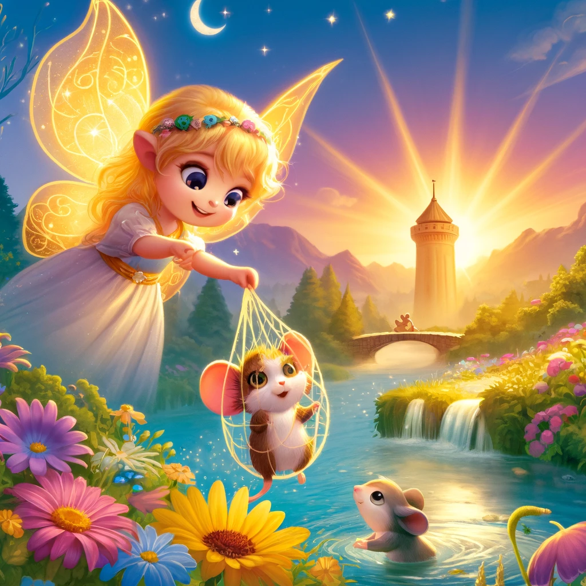

Luna y Milo: La Aventura en la Torre del Sol

Había una vez, en un reino lejano, una pequeña hada llamada Luna. Luna era diferente a todas las demás hadas porque, en lugar de tener alas brillantes y grandes, tenía unas alitas diminutas que apenas la levantaban del suelo. Sin embargo, Luna tenía un corazón lleno de valentía y un espíritu aventurero.
Un día, mientras paseaba por el bosque, Luna escuchó un suave llanto. Siguiendo el sonido, encontró a un pequeño ratón atrapado en una red. "Ayúdame, por favor," dijo el ratón con ojos llorosos.
Sin dudarlo, Luna usó su magia para liberar al ratón. "Gracias, pequeña hada," dijo el ratón. "Soy Milo, y debo llegar a la Torre del Sol antes del anochecer para entregar un mensaje muy importante."
Luna decidió ayudar a Milo, aunque la Torre del Sol estaba muy lejos y el camino era peligroso. Juntos, atravesaron ríos y montañas, enfrentando varios desafíos. Usando su ingenio y su bondad, Luna logró superar cada obstáculo. Con el tiempo, se dieron cuenta de que sus verdaderos poderes no estaban en sus alas, sino en su valentía y su corazón amable.
Finalmente, llegaron a la Torre del Sol justo cuando el sol se estaba poniendo. Gracias a Luna, el mensaje fue entregado a tiempo, y el reino fue salvado de un gran peligro.
El rey, agradecido, recompensó a Luna y a Milo. Luna recibió unas nuevas alas doradas que brillaban con la luz del sol, y Milo fue nombrado el mensajero real.
Desde ese día, Luna y Milo vivieron muchas más aventuras juntos, demostrando que, con un corazón valiente y amigos leales, cualquier cosa es posible.
Y colorín colorado, este cuento se ha acabado. Buenas noches, Alondra. ¡Dulces sueños!